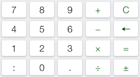

Entering Values
This E6B application allows you to enter values directly into individual fields marked in green. Every input field can also be used as a simple calculator.
Entering Values
For entering numeric values such as altitudes or air speeds, you can use the numbers [0] through [9], [.] and [+/-]. For example, to enter a barometer setting of 29.94, you would press [2] [9] [.] [9] [4].
You can also use the calculator buttons to enter calculated values. For example, if you are entering an altitude by adding 5000 feet to 1500 feet, you can press [5] [0] [0] [0] [+] [1] [5] [0] [0] [=], and the input field will show 6500.
Entering Time
For fields that require a time, you can enter time either in hours and fractions of an hour, or in hours, minutes and seconds.
To enter 2.4 hours, you would press [2] [.] [4] [=]. The input field will display 2:24:00 (2 hours 24 minutes).
To enter time in hours, minutes and seconds, you would use the [:] key. During entry the time is parsed as minutes and seconds, or hours, minutes, seconds. So, to enter 1 hour 5 minutes, you would enter [1] [:] [0] [5] [:] [=]; the input field would then display 1:05:00. To enter 5 minutes 30 seconds, you'd enter [5] [:] [3] [0] [=], and the display would display "0:05:30".
For all times, a time is shown in hours:minutes:seconds.